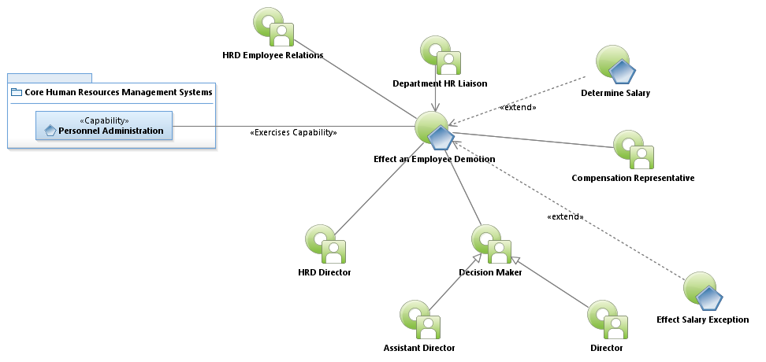
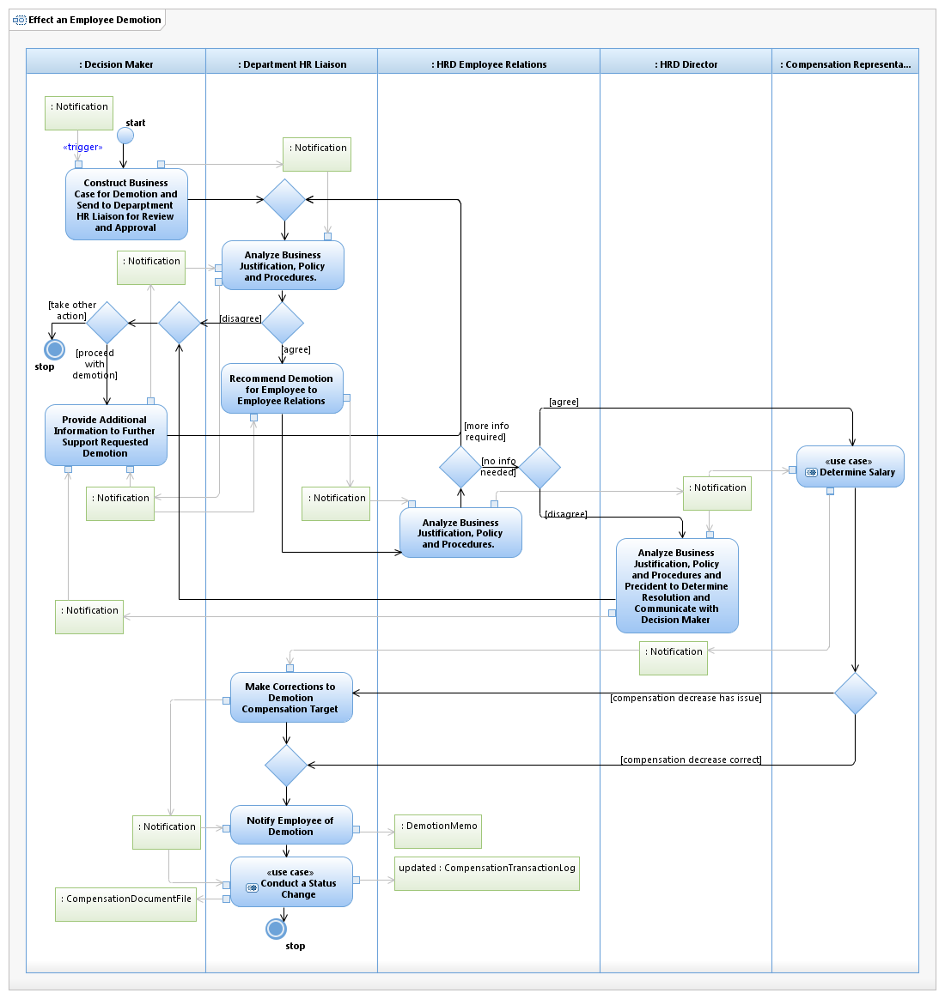

Use Case Model: Effect an Employee Demotion
Architect: Aaron Brown, IT Enterprise Architect Senior
Date Last Modified: 02/21/2013
User Review: Holly Moyer, Tommy Tucker, Sharon Huckabee
Date: 02/21/2013
Analyze consideration of factors to effect an employee Demotion based on policy resulting in a decision to Demote an Employee or take other actions. Factors include current salary and classification, reason for Demotion, and consideration of new classification and salary of existing personnel.
Follow link to Role Definitions

Use Case Model: Effect an Employee Demotion

Activity Model: Effect an Employee Demotion